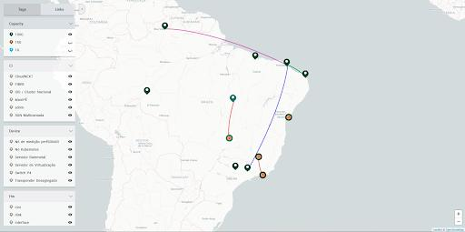

In ChameleonMap, the menus of tags registered in the system are presented to the user in a side menu palette. Users can interact with this palette to select a menu, making it the current menu. Once a menu is selected, the map displays the tags associated with it through colored markers.
Each registered location with an active tag is represented by a marker with the color of the respective tag. Locations with multiple active tags generate unique markers filled with a mosaic composed of the colors of all active tags present in that location.
The system's filtering mechanism empowers users to control the visibility of each tag in the current menu. This real-time adjustment allows users to tailor the visual representation of information on the map. The visibility adjustment depends on both the selected current menu and the user's tag visibility settings.
Figure 4.1.0 illustrates the functionality of visibility adjustment. In this example, the user has deactivated the visualization of two out of three tags in the current menu (Capacity), resulting in a partial view of locations associated with the tags.
The filtering mechanism extends to registered links, both directly and indirectly. Indirectly, links are visualized based on the currently active tags. Links will be drawn if both the origin and destination locations have drawn markers. Additionally, there is direct link filtering through the links menu, operating as a layer above the filtering. This allows control over the display of links based on the current view state without altering the current tag menu.